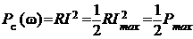
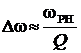

Полосой пропускания последовательного колебательного контура называют диапазон частот
Δω = ωв − ωн,
(2.108)
в пределах которого значение нормированного тока Ni(ω) не уменьшается более, чем 1/√2 относительно своего максимального значения, равного единице (см. рис. 2.62). На границах полосы пропускания, т. е. на частотах ωн и ωв, называемых нижней и верхней частотами среза, нормированный ток Ni(ω) = 1/√2 ≈ 0,707, а фазовый угол φ = = ±45°.
При этом активная мощность сигнала на частотах среза

в 2 раза меньше максимальной мощности Pmax = при резонансе. Поэтому под полосой пропускания понимают также диапазон частот, в пределах которого максимальная мощность выходного сигнала снижается не более, чем в два раза.
На графиках рис. 2.62а, б нормированный
ток . Проведя горизонтальную линию на уровне и опустив перпендикуляры из точек
пересечения этой линии с кривой Ni(ω), определяют (на оси абсцисс) полосу пропускания Δω = ωв − ωн.
Приближённо полосу пропускания контура можно определить по формуле
. (2.109)